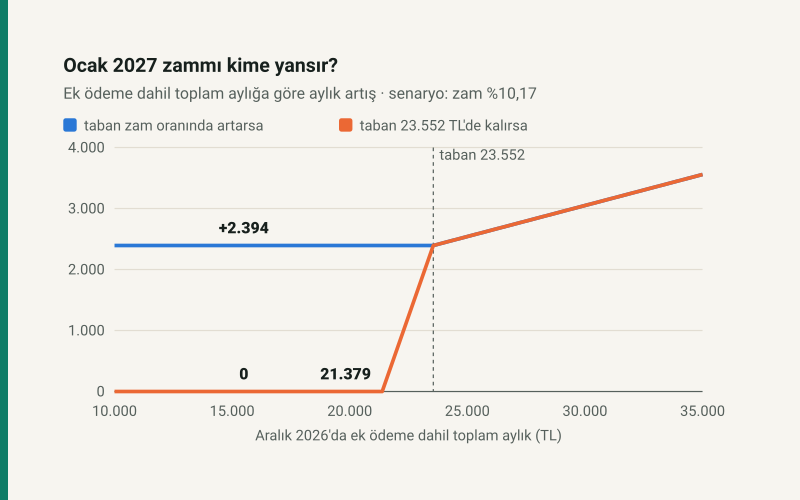

Kısa cevap
Zam kime uygulanır? SSK ve Bağ-Kur aylıkları Ocak'ta Temmuz–Aralık TÜFE değişimi kadar artar (5510 s.K. m.55). Artış, kişinin kendi bağlanmış aylığına ve ona bağlı ek ödemeye uygulanır.
En düşük aylık nasıl işler? 5510 sayılı Kanunun ek 19 uncu maddesi, ek ödeme dahil aylık toplamının dosya başına 23.552 TL'den az olamayacağını söyler; aradaki farkı Hazine öder. Bu tutar bir formülle değil, her seferinde bir kanunla değişir.
Ocak'ta ne olur? Taban kanunla yükseltilmezse, zamlı toplam aylığı 23.552 TL'yi geçmeyen dosya yine 23.552 TL alır. Taban zam oranında yükseltilirse tabandakiler de aynı oranda artış alır. 13 Ekim 2026 itibarıyla TBMM'ye sunulmuş, tabanı değiştiren bir teklif görünmüyor.
Zam neden tabandakine yansımıyor?
Tabandaki bir emeklinin ödemesi iki parçadır: kendi aylığı (ek ödeme dahil) ve 23.552 TL'ye tamamlayan Hazine farkı. Ocak zammı yalnız ilk parçayı büyütür; ikinci parça aynı oranda küçülür, toplam değişmez. Kendi aylığı zamla 23.552 TL'yi geçtiği andan itibaren zam ödemeye yansımaya başlar.
Bu yüzden zammın yansımadığı sınır toplam aylıktır: 23.552 ÷ (1 + zam). Ocak zammının üç senaryosu için:
| Senaryo (Ekim–Aralık) | Ocak zammı | Bu tutarın altında artış yok |
|---|---|---|
| Her ay %1 | %8,76 | 21.655 TL |
| 2025'in aynı ayları | %10,17 | 21.379 TL |
| Her ay %2 | %12,02 | 21.025 TL |
Senaryolar tahmin değil. Temmuz, Ağustos ve Eylül açıklandı ve birikim %5,56'da kesinleşti; kalan üç ay için yalnız varsayım yapılabilir. Ocak zammı, TÜİK Aralık 2026 enflasyonunu Ocak'ın ilk günlerinde açıkladığında kesinleşir.
Aylığınıza göre Ocak'ta ne olur?
| Aralık'ta toplam aylık | Aralık'ta ödenen | Ocak, taban sabit | Artış | Ocak, taban %10,17 artarsa | Artış |
|---|---|---|---|---|---|
| 15.000 | 23.552 | 23.552 | 0 | 25.946 | +2.394 |
| 20.000 | 23.552 | 23.552 | 0 | 25.946 | +2.394 |
| 21.500 | 23.552 | 23.686 | +134 | 25.946 | +2.394 |
| 23.552 | 23.552 | 25.946 | +2.394 | 25.946 | +2.394 |
| 25.000 | 25.000 | 27.541 | +2.541 | 27.541 | +2.541 |
| 30.000 | 30.000 | 33.050 | +3.050 | 33.050 | +3.050 |
Toplam aylığı 23.552 TL ve üstünde olanın Ocak'ı tabanın kararından etkilenmez. 21.379 ile 23.552 TL arasındakiler zammın bir kısmını alır. Altındakiler için Ocak'taki tek değişiklik, kanun çıkarsa tabanın kendisi.
Kendi aylığınızın hangi aralıkta olduğunu emekli zammı aracında taban tamamlamasından önceki tutarla hesaplayabilirsiniz; araç tabanı bilerek hesaba katmaz.
Taban geçmişte zamla birlikte arttı mı?
En düşük aylık 2019'da 1.000 TL olarak kondu. O günden beri 11 kez değişti, her seferinde ayrı bir kanunla. 55. maddenin işlediği 15 zam döneminde taban 9 kez yükseldi, 6 kez yerinde kaldı:
| Zam dönemi | 55. madde oranı | Taban | Tabanın artışı | Kanun |
|---|---|---|---|---|
| Temmuz 2019 | %5,01 | 1.000 | artmadı | — |
| Ocak 2020 | %6,49 | 1.000 | artmadı | — |
| Temmuz 2020 | %5,74 | 1.500 | artmadı | — |
| Ocak 2021 | %8,35 | 1.500 | artmadı | — |
| Temmuz 2021 | %8,46 | 1.500 | artmadı | — |
| Ocak 2022 | %25,46 | 1.500 → 2.500 | %66,67 | 7351 |
| Temmuz 2022 | %42,34 | 2.500 → 3.500 | %40,00 | 7417 |
| Ocak 2023 | %15,39 | 3.500 → 5.500 | %57,14 | 7431 |
| Temmuz 2023 | %19,78 | 7.500 | artmadı | — |
| Ocak 2024 | %37,57 | 7.500 → 10.000 | %33,33 | 7495 |
| Temmuz 2024 | %24,73 | 10.000 → 12.500 | %25,00 | 7524 |
| Ocak 2025 | %15,75 | 12.500 → 14.469 | %15,75 | 7539 |
| Temmuz 2025 | %16,67 | 14.469 → 16.881 | %16,67 | 7553 |
| Ocak 2026 | %12,20 | 16.881 → 20.000 | %18,48 | 7573 |
| Temmuz 2026 | %17,75 | 20.000 → 23.552 | %17,76 | 7590 |
İki karar bir zam dönemine denk gelmedi: Nisan 2020'de 1.500 TL'ye (7226) ve Nisan 2023'te 7.500 TL'ye (7447). Yani Temmuz 2023'te taban artmadı ama üç ay önce %36,4 artmıştı. 2025'ten bu yana taban her dönem en az zam oranı kadar yükseldi; Ocak 2025, Temmuz 2025 ve Temmuz 2026'da tam zam oranında.
Ocak kararlarının takvimi de belli: 7351, 7431, 7495, 7539 ve 7573 sayılı kanunlar Ocak'ın 12'si ile 31'i arasında kabul edildi ve Ocak ödeme döneminden geçerli sayıldı.
2019'da tabanda olan biri bugün nerede?
2019'da kendi aylığı tam 1.000 TL olan, yani tabanın tam sınırında duran bir emekliyi düşünelim. Kendi aylığı her dönem yalnız 55. maddenin oranıyla büyür; Temmuz 2026'da 10.501 TL olur: 15 dönemin zamlarının birikimi 10,50 kat. Aynı sürede taban 23,55 katına çıktı. Bu emeklinin kendi aylığı bugün tabanın yalnız %44,6'sı.
Bunun anlamı: tabandaki birine bugüne kadar zammı yansıtan, kendi aylığı değil tabanın kararıydı. Taban bundan sonra dondurulsa, bu kişinin kendi aylığı her dönem %10,17 artışla tabanı ancak 9 dönem sonra, yani dört buçuk yılda geçer; o zamana kadar ödemesi değişmez.
Ne bilinmiyor?
Ocak 2027'de tabanın yükselip yükselmeyeceği. Taban bir formüle bağlı değil, her artışı ayrı bir kanun maddesi. Ocak 2027'yi belirleyen kalemler yazısında da anlatıldığı gibi, 13 Ekim 2026 itibarıyla sunulmuş bir teklif görünmüyor. Geçmiş, tabanın son altı dönemdir yükseltildiğini gösteriyor; bir sonrakinin de yükseltileceğini göstermiyor. Tabandaki emekli sayısını da SGK'nın yayımladığı tablolarda bulamadık; bu yüzden yazı kişi sayısı vermiyor.
Varsayımlar ve sınırlar
- 55. madde oranı TÜİK'in aylık TÜFE değişimlerinin bileşiği; TCMB'nin yayımladığı seriden Eylül 2026'ya kadar. Resmî ilan endeksten yapılır, 0,01 puanlık fark olabilir (Temmuz 2026'da taban, ilk altı ayın enflasyonu olarak ilan edilen %17,76 oranında artırıldı).
- Bazı dönemlerde 55. maddenin üstüne kanunla ek artış verildi; tablo yalnız 55. maddenin oranını gösterir. 4/c (memur) emeklileri bu kurala değil memur maaş artışına bağlıdır.
- "Toplam aylık", ek ödeme dahil ve taban tamamlaması hariç tutardır; ek ödeme aylığın yüzdesi olduğu için aylıkla aynı oranda artar. Ölüm aylığında taban hak sahiplerinin hisse oranına göre uygulanır; örnekler tek hak sahipli malullük ve yaşlılık aylığıdır.
- 2019 örneği, kendi aylığı 1.000 TL olan ve her dönem yalnız 55. madde oranıyla artan varsayımsal bir dosyadır.
Kaynaklar
- 5510 sayılı Kanun, m.55 ve ek m.19; tutar değişikliklerinin dipnotları ve yürürlük tablosu (Mevzuat Bilgi Sistemi, 13 Ekim 2026'da okundu)
- 7590 sayılı Kanun, m.16: tabanın 23.552 TL'ye çıkması (Resmî Gazete, 31 Temmuz 2026)
- 5454 sayılı Kanun, m.1: ek ödeme
- TÜFE aylık değişimleri: TCMB, Tüketici Fiyatları (TÜİK verisi)
Rakamlar yazının modülünden (taban.js) gelir; modül zam oranlarını sitenin emekli zammı motorundan Eylül 2026'ya kesilmiş TÜFE serisiyle hesaplar. Grafik bu modülden çizilir ve otomatik testle denetlenir.
Sık sorulan sorular
En düşük emekli aylığı Ocak 2027'de kendiliğinden artar mı?
Hayır. En düşük aylık 5510 sayılı Kanunun ek 19 uncu maddesinde yazılı sabit bir tutar, bugün 23.552 TL. Artması için yeni bir kanun hükmü gerekir; 2019'dan beri her artışı ayrı bir kanunla yapıldı.
Taban artmazsa Ocak zammı bana yansır mı?
Ek ödeme dahil kendi aylığınız zamla 23.552 TL'yi geçerse geçen kısım kadar yansır. Zam %10,17 olursa toplam aylığı 21.379 TL'nin altında olana hiç yansımaz.
Ocak 2027 emekli zammı ne kadar olacak?
Temmuz–Eylül 2026 TÜFE'si açıklandı ve birikim %5,56. Ekim, Kasım ve Aralık'a göre değişecek; bu üç ay 2025'in aynı ayları gibi giderse %10,17, her biri %1 olursa %8,76, her biri %2 olursa %12,02. Kesin oran, Aralık enflasyonu Ocak 2027'nin ilk günlerinde açıklanınca belli olur.
Geçmişte taban kaç kez artmadı?
2019'dan bu yana 15 zam döneminin 6'sında: Temmuz 2019, Ocak 2020, Temmuz 2020, Ocak 2021, Temmuz 2021 ve Temmuz 2023. Bunlardan ikisinden önce taban Nisan'da artırılmıştı (Nisan 2020 ve Nisan 2023).